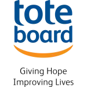
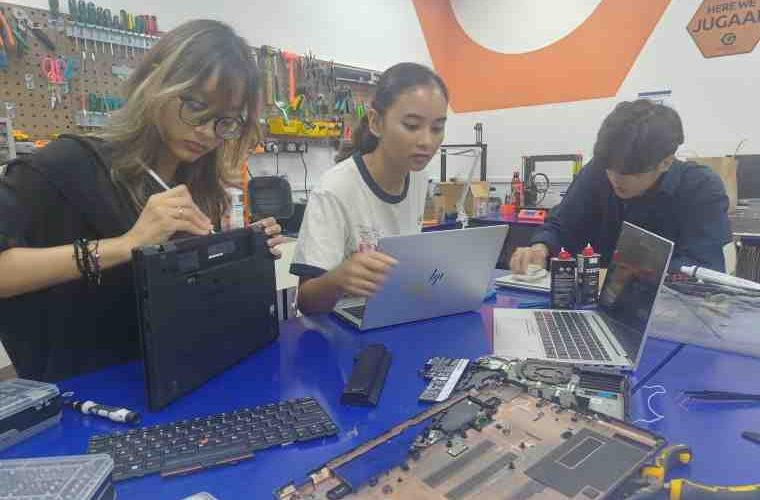
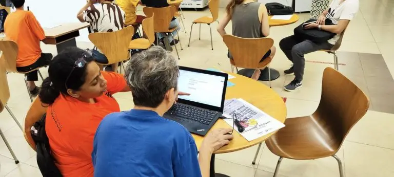
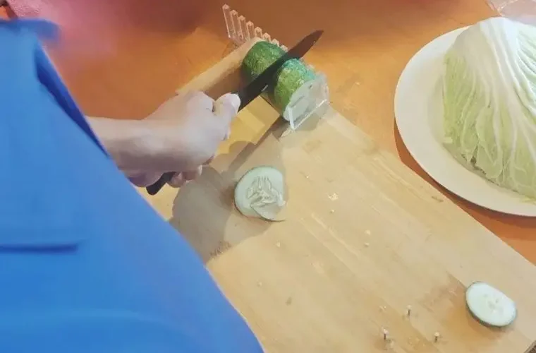
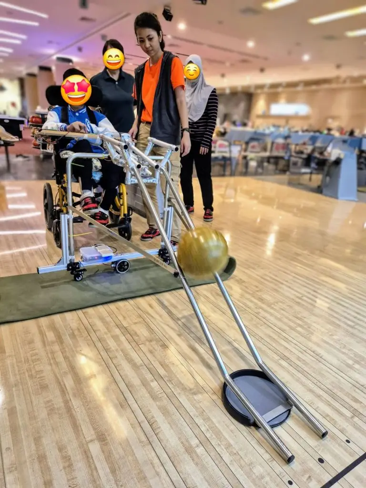

🎄 Engineering Good Vibes this Festive Season 🎄
This season of giving, let’s come together to share more than just gifts – let’s share opportunities, joy, and brighter futures. Support our Engineering Good Vibes 2025-26 (EGV2526) fundraising campaign from 1st October 2025 to 31st March 2026.
Your donation to our Engineering Good Vibes fundraising campaign will help us:
✨ Provide laptops to students from low-income families, displaced workers, single moms, temporary shelter residents and other disadvantaged individuals – so they can learn, connect, and thrive
✨ Develop practical assistive technology solutions that support persons with disabilities in learning, daily life and leisure activities
✨ Run Digital Inclusion programmes that bridge the digital divide and build a more inclusive Singapore
$50 : Your donation will help defray the cost of parts replacement of a refurbished laptop
$ 200 : Your donation will subsidise the cost of providing a refurbished laptop to someone in need
$ 1,000 : Your donation will cover the prototyping cost of an Assistive Technology project.
Kindly make your generous donation using PayNow to:
UEN: 201408320W
Alternatively, Internet banking (FAST) or bank Telegraphic Transfer (TT) to:
DBS Bank Account Name : ENGINEERING GOOD LTD
DBS Bank Account No. : 072-115493-5
DBS Bank Swift Address : DBSSSGSG
Please add reference: EGV2526
This will allow us to track and process your donation more efficiently for Tote Board EFG matching grant.
To receive an e-receipt for your donation, please email finance@engineeringgood.org

This fundraising campaign is supported by Tote Board Enhanced Fund-Raising Grant and donations made towards this EGV2526 Fundraising Campaign will be kindly matched dollar-for-dollar by the grant. Tote Board’s EFR grant supports charities, like Engineering Good, in doing more to serve the vulnerable communities in Singapore.
Engineering Good – what we do
Engineering Good Ltd (EG) is a Singapore-registered charity that brings together a community of staff, volunteers, donors, sponsors, and supporters with diverse skills, including technology and engineering, to serve disadvantaged and disability communities. We support these communities by enabling access to digital education, economic opportunities and helping them overcome daily challenges through innovative humanitarian engineering solutions. Our vision is to engineer a better and more inclusive world.
Our Tech For Good initiatives focus on these main areas: Digital Inclusion and Assistive Technology
In our Tech For Good – Digital Inclusion programme, we refurbish decommissioned corporate laptops and distribute them through community partners to support disadvantaged users to access online education, job searches, and other socioeconomic opportunities. By extending the lifecycle of decommissioned laptops, we also play a part in making Singapore an sustainable and liveable home for all, by reducing e-waste and its environmental impact on Singapore. Working in collaboration with a few community partners, we will facilitate Digital Literacy (DI) programmes, such as basic computer literacy, e-learning and cyber wellness. These DI programmes aim to help users, who are residents of shelters and students from disadvantaged families, to build confidence in using digital tools for learning, looking for jobs, for work, and social connection.
In our Tech For Good – Accelerator and Makers programmes, we train, coach, and collaborate with youth innovators, disability sector professionals, skilled volunteers, and community partners to develop open-source assistive technology solutions. These solutions support persons with disabilities in learning, inclusive employment, daily activities, and overall well-being, empowering them to lead more fulfilling and independent lives.
Through these assistive technology projects, we also create meaningful opportunities for volunteers to engage with persons with disabilities, fostering a more caring and cohesive society.



